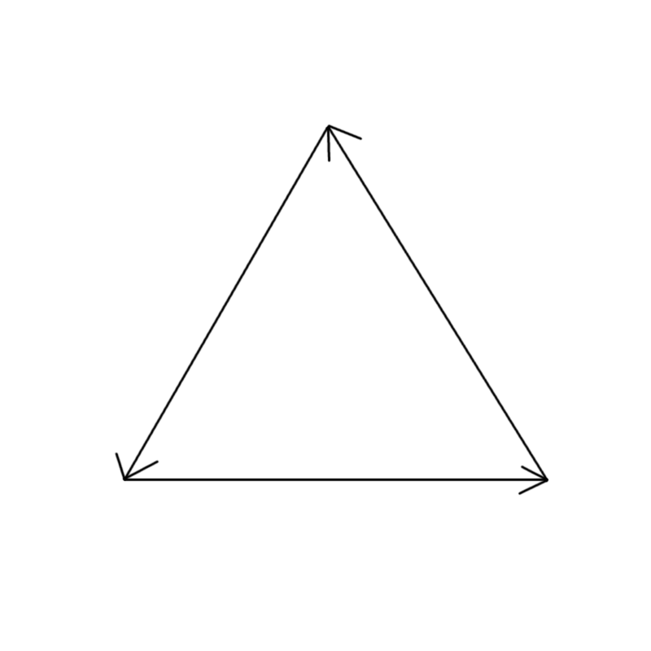
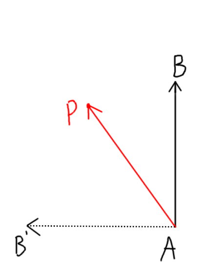

Software Rasterizer và Depth buffer
Ta đang sử dụng các hàm có sẵn của canvas context để vẽ, đặc biệt là hàm fill để tô màu các tam giác của chúng ta. Nhưng làm như vậy thì ta đang cho rằng các tam giác chỉ cần vẽ một màu duy nhất từ đầu đến cuối, nhưng mà khi ta muốn làm các thứ nâng cao hơn như ánh sáng hay texture thì điều đó tất nhiên sai.Ta phải cần một cách nào đó để có thể vẽ được từng pixel một của một tam giác, để ta có khả năng control được từng pixel một cho những thứ nâng cao về sau. Cho nên trong blog này ta sẽ build một thứ gọi là Software Rasterizer (chữ "Software" đến từ việc nó chạy bằng CPU).
Ta phải lùi lại khỏi engine của chúng ta một chút và thử vẽ một thứ đơn giản mà không cần lạm dụng các hàm có sẵn của canvas (ta vẫn cần ít nhất một hàm để thật sự vẽ gì đó lên canvas tho). Canvas không có hàm vẽ 1 pixel, nhưng có hàm rect để vẽ một hình chữ nhật, trên lý thuyết ta có thể dùng hàm này để vẽ từng pixel, nhưng mà nó sẽ RẤT LÀ LAG. Cách tốt hơn là ta sẽ tạo một mảng 2 chiều chứa hết các pixel trong canvas, ta sẽ thay đổi các giá trị trên mảng 2 chiều đó, sau đó cuối frame ta sẽ dùng mảng 2 chiều đó để gán các pixel vào một ImageData rồi sau đó chỉ cần vẽ ImageData đó lên canvas.
Lưu ý là ImageData là mảng một chiều, mỗi 4 giá trị liền kề nhau của nó đại diện cho giá trị RGBA (0-255) của một pixel, và mỗi lần hết số pixel của 1 hàng thì nó sẽ tới những pixel của hàng tiếp theo. Ví dụ với canvas 400x300, pixel ở hàng 50 cột 60 sẽ có giá trị red ở 50 * 400 + 60, giá trị green ở 50 * 400 + 61, tương tự với blue và alpha.
Trước khi làm gì đó liên quan tới rasterize, ta cần tạo một class là kiểu dữ liệu cho màu:
class Color {
constructor(r, g, b) {
this.r = r;
this.g = g;
this.b = b;
}
}class Rasterizer {
constructor() {
this.imageData = ctx.createImageData(canvas.width, canvas.height);
this.screenBuffer = [];
for (let i = 0; i < canvas.height; i++) {
let screenRow = [];
for (let j = 0; j < canvas.width; j++) {
screenRow.push(new Color(255, 255, 255));
}
this.screenBuffer.push(screenRow);
}
}
}drawCall() {
let index = 0;
for (let y = 0; y < canvas.height; y++) {
for (let x = 0; x < canvas.width; x++) {
const c = this.screenBuffer[y][x];
this.imageData.data[index++] = c.r;
this.imageData.data[index++] = c.g;
this.imageData.data[index++] = c.b;
this.imageData.data[index++] = 255;
}
}
ctx.putImageData(this.imageData, 0, 0);
}placePixel(pos, color) {
if (pos[1] >= 0 && pos[1] < canvas.height && pos[0] >= 0 && pos[0] < canvas.width)
this.screenBuffer[parseInt(pos[1])][parseInt(pos[0])] = color;
}clearScreen() {
for (let i = 0; i < this.screenBuffer.length; i++) {
for (let j = 0; j < this.screenBuffer[i].length; j++) {
this.screenBuffer[i][j] = new Color(240, 240, 240);
}
}
}Ta sẽ bắt đầu từ việc xét lại thứ tự các đỉnh mà ta định nghĩa cho tam giác trong engine chúng ta, cụ thể là ngược chiều kim đồng hồ như sau:


Bây giờ ta phải chuyển nó thành 1 công thức đơn giản để dễ cài đặt, với \(A=(a_x, a_y), B=(b_x, b_y), P=(p_x, p_y)\), ta có \(\vec{AB}=(b_x-a_x, b_y-a_y), \vec{AB'}=(a_y-b_y, b_x-a_x), \vec{AP}=(p_x-a_x, p_y-a_y)\). Suy ra \(\langle \vec{AB'}, \vec{AP} \rangle = (a_y-b_y)(p_x-a_x) + (b_x-a_x)(p_y-a_y)\). Công thức này người ta gọi là Edge function, mình sẽ ghi tắt nó là \(E(A, B, P)\), vậy thì điểm \(P\) nằm bên trái của vector \(AB\) nếu \(E(A, B, P) > 0\).
Như vậy, một điểm \(P\) sẽ nằm trong tam giác \(ABC\) nếu \(E(A, B, P) > 0\), \(E(B, C, P) > 0\), và \(E(C, A, P) > 0\).